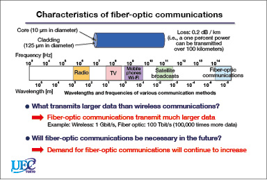
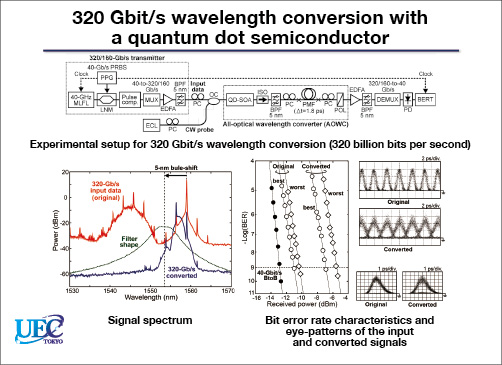

This is page that show my lab by using images and lists
Information about Motoharu Matsuura Lab
- Faculty/Department: Department of Communication Engineering and Informatics Graduate School of Informatics and Engineering
- Members: Motoharu Matsuura, Associate professor
- Affiliations: IEEE (U.S.), Institute of Electronics, Information and Communication Engineers, Optical Society of America (U.S.)
- Website: Matsuura lab
Key words
- Fiber-optic communications
- Optical signal processing
- Optical networks
- Wireless communications
- Disaster resilience
- Mobile phones
- Lasers
- Power transmission
Topics now in research
- Fiber-optic communications that underpin the convenience of smartphones
- Optical signal processing for higher speeds and lower power consumption
- Constructing disaster-resilient communication systems
- Stressing empirical experiences and idea generation
My seat in lab
Detail of research topic
1. Fiber-optic communications that underpin the convenience of smartphones
 What is the fastest and largest-capacity surface communication method? Fiber-optic communications. As its name suggests, fiber-optic communications is a method of transmitting signals through an optical fiber, which is a long and narrow transparent fiber. Optical fibers consist of a small core and a cladding. Signals are transmitted by passing light through this core.
Recently, wireless communication usage has skyrocketed with mobile phones, smartphones, tablets, and other wireless devices. Wireless communications is a method of sending signals by propagating electromagnetic waves through air. While light is also a type of electromagnetic wave, because of light physical properties, optical signals have much higher carrier frequency than the electromagnetic waves used in wireless communications. In other words, the amount of data that fiber-optic communications can send is much larger than that of wireless communications (see Figure 1). This is why fiber-optic communications are nearly always chosen for applications where large volumes of data must be conveyed, such as trunk lines and backbones at the core of a communication system.
But just how much data can a fiber-optic communication line transmit? At the experimental level, optical-fiber data transmission speeds of one petabit (Pbit) per second have been obtained. One petabit is one quadrillion (1015) bits. And how much data is that? equivalent to sending 5,000 two-hour HDTV movies in one second�E(Associate Professor Matsuura). Putting it another way, if 5,000 users try to download a two-hour HDTV movie at the same time, all the downloads will be completed in just one second. Suffice to say, it an incredible amount of data.
2. Optical signal processing for higher speeds and lower power consumption

The Matsuura laboratory research looks at ways of advancing fiber-optic communications. This research covers three basic topics. The first research topic is ultra-fast optical signal processing technology with an aim toward attaining the maximum possible speeds and performance levels. The second topic is disaster-resilient communication technology that fuses fiber-optic communications and wireless communications, called Radio-over-fiber�E And the third is research into fiber-optic transmission technology using state-of-the-art optical fiber (see Figure 2).

The first topic, ultra-fast optical signal processing technology, is a key technology for future optical networks. Optical networks consist of optical nodes where optical signals are sent and received and optical links that join the nodes (see Figure 3). At present, optical nodes convert input optical signals into electrical signals to process the signals with electronic circuitry. The processed electrical signals are converted back to optical signals and output on the optical links. With this method, however, increasing the speed of the electronic circuitry results in steep increases in power consumption. Since higher power consumption is no longer feasible given today focus on energy conservation, higher speeds than what we have today may well be impractical.
As an alternative, researchers are looking at equipping nodes with optical signal-processing circuitry, which performs signal processing on unconverted optical signals. Research is going in this direction because optical signal-processing circuitry operates at much faster speeds than electronic circuitry while, it is hoped, consuming much less power.
One example of the Matsuura laboratory research into optical signal processing is ultra-fast wavelength conversion, developed in partnership with the Eindhoven University of Technology in the Netherlands. The laboratory has demonstrated wavelength conversions of optical signal at speeds of up to 320 Gbit/s (see Figure 4).
"The views and opinions expressed in this page are strictly those of the webpage author. The contents of this page have not been reviewed or approved by The University of Electro-Communications."